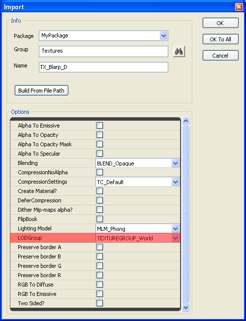
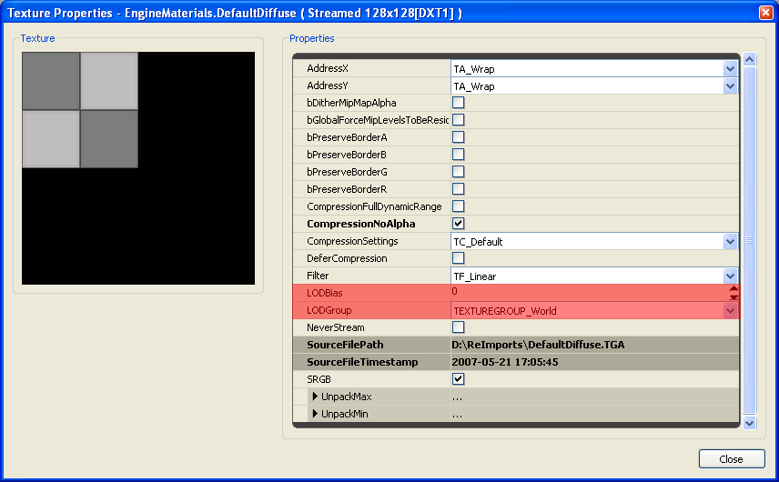

UDN
Search public documentation:
TextureSupportAndSettings
日本語訳
中国翻译
한국어
Interested in the Unreal Engine?
Visit the Unreal Technology site.
Looking for jobs and company info?
Check out the Epic games site.
Questions about support via UDN?
Contact the UDN Staff
中国翻译
한국어
Interested in the Unreal Engine?
Visit the Unreal Technology site.
Looking for jobs and company info?
Check out the Epic games site.
Questions about support via UDN?
Contact the UDN Staff
UE3 Home > Materials & Textures > Texture Support and Settings
UE3 Home > Texture Artist > Texture Support and Settings
UE3 Home > Texture Artist > Texture Support and Settings
Texture Support and Settings
Overview
Texture Resolution
Current DirectX video adapters and game consoles support various texture resolutions from 1x1 to 2048x2048 and up to 8192x8192. The highest texture resolution supported by a specific hardware device varies by manufacturer and model. The amount of available texture memory pool also varies by the hardware.
There are a number of features and settings in Unreal Engine 3 for managing the texture resolutions that are rendered for various areas such as world geometry or the user interface.
Engine Texture Resolution Limit
Src\D3D9Drv\Src\D3D9Device.cpp
Src\Engine\Inc\RHI.h
Src\Engine\Inc\UnTex.h
Src\Engine\Src\RHI.cpp
Src\Engine\Src\TextureCube.cpp
Compressed Texture Memory Requirements
Since the resolution to compression ratio is a constant, to calculate the memory requirements for a texture resolution not listed here simply multiply the resolution ratios. For example, a 1024x512 texture would be one-half the memory requirements of a 1024x1024 texture.
The table data was compiled from textures created by ATI's Compressonator using Box-Filter mip generation and DirectX Texture Compression.
| Resolution | Total Mips from 1x1 | DXT1 | DXT5 |
| 16x16 | 5 mips | 312 bytes | 496 bytes |
| 32x32 | 6 mips | 824 bytes | 1.48kb (1,520 bytes) |
| 64x64 | 7 mips | 2.80kb (2,872 bytes) | 5.48kb (5,616 bytes) |
| 128x128 | 8 mips | 10.8kb (11,064 bytes) | 21.4kb (22,000 bytes) |
| 256x256 | 9 mips | 42.8kb (43,832 bytes) | 85.4kb (87,536 bytes) |
| 512x512 | 10 mips | 170kb (174,904 bytes) | 341kb (349,680 bytes) |
| 1024x1024 | 11 mips | 682kb (699,192 bytes) | 1.33MB (1,398,256 bytes) |
| 2048x2048 | 12 mips | 2.66MB (2,796,344 bytes) | 5.33MB (5,592,560 bytes) |
| 4096x4096 | 13 mips | 10.6MB (11,184,952 bytes) | 21.3MB (22,369,776 bytes) |
| 8192x8192 | 14 mips | 42.6MB (44,739,384 bytes) | 85.3MB (89,478,640 bytes) |
Normal Map Texture Formats
Engine Config TextureGroup Properties
The source set of configuration settings files is located in the UnrealEngine3\Engine\Config\BaseEngine.ini file under the [SystemSettings] section.
For developing games, the [My] Documents\My Games\[your_game]\Config\[your_game]Engine.ini file also contains a mirror set of the base properties in the Engine\Config\ folder and should be the copy that is normally modified for your game's specific settings. Note that there are independant sets of TextureGroup entries for the Unreal Editor and in-game. These two sets are respectively located in the [SystemSettingsEditor] and [SystemSettings] sections in the config files. The TextureGroup settings entries in the BaseEngine.ini file will look similar to this. Note that older QA versions may not include the MinMagFilter and MipFilter properties for each setting. TEXTUREGROUP_World=(MinLODSize=1,MaxLODSize=4096,LODBias=0,MinMagFilter=aniso,MipFilter=point)
TEXTUREGROUP_WorldNormalMap=(MinLODSize=1,MaxLODSize=4096,LODBias=0,MinMagFilter=aniso,MipFilter=point)
TEXTUREGROUP_WorldSpecular=(MinLODSize=1,MaxLODSize=4096,LODBias=0,MinMagFilter=aniso,MipFilter=point)
TEXTUREGROUP_Character=(MinLODSize=1,MaxLODSize=4096,LODBias=0,MinMagFilter=aniso,MipFilter=point)
TEXTUREGROUP_CharacterNormalMap=(MinLODSize=1,MaxLODSize=4096,LODBias=0,MinMagFilter=aniso,MipFilter=point)
TEXTUREGROUP_CharacterSpecular=(MinLODSize=1,MaxLODSize=4096,LODBias=0,MinMagFilter=aniso,MipFilter=point)
TEXTUREGROUP_Weapon=(MinLODSize=1,MaxLODSize=4096,LODBias=0,MinMagFilter=aniso,MipFilter=point)
TEXTUREGROUP_WeaponNormalMap=(MinLODSize=1,MaxLODSize=4096,LODBias=0,MinMagFilter=aniso,MipFilter=point)
TEXTUREGROUP_WeaponSpecular=(MinLODSize=1,MaxLODSize=4096,LODBias=0,MinMagFilter=aniso,MipFilter=point)
TEXTUREGROUP_Vehicle=(MinLODSize=1,MaxLODSize=4096,LODBias=0,MinMagFilter=aniso,MipFilter=point)
TEXTUREGROUP_VehicleNormalMap=(MinLODSize=1,MaxLODSize=4096,LODBias=0,MinMagFilter=aniso,MipFilter=point)
TEXTUREGROUP_VehicleSpecular=(MinLODSize=1,MaxLODSize=4096,LODBias=0,MinMagFilter=aniso,MipFilter=point)
TEXTUREGROUP_Cinematic=(MinLODSize=1,MaxLODSize=4096,LODBias=0,MinMagFilter=aniso,MipFilter=point)
TEXTUREGROUP_Effects=(MinLODSize=1,MaxLODSize=4096,LODBias=0,MinMagFilter=linear,MipFilter=point)
TEXTUREGROUP_EffectsNotFiltered=(MinLODSize=1,MaxLODSize=4096,LODBias=0,MinMagFilter=aniso,MipFilter=point)
TEXTUREGROUP_Skybox=(MinLODSize=1,MaxLODSize=4096,LODBias=0,MinMagFilter=aniso,MipFilter=point)
TEXTUREGROUP_UI=(MinLODSize=1,MaxLODSize=4096,LODBias=0,MinMagFilter=aniso,MipFilter=point)
TEXTUREGROUP_LightAndShadowMap=(MinLODSize=1,MaxLODSize=4096,LODBias=0,MinMagFilter=aniso,MipFilter=point)
TEXTUREGROUP_RenderTarget=(MinLODSize=1,MaxLODSize=4096,LODBias=0,MinMagFilter=aniso,MipFilter=point) The TextureGroup settings in the
TEXTUREGROUP_WorldNormalMap=(MinLODSize=256,MaxLODSize=1024,LODBias=1)
TEXTUREGROUP_WorldSpecular=(MinLODSize=256,MaxLODSize=1024,LODBias=1)
TEXTUREGROUP_Character=(MinLODSize=256,MaxLODSize=1024,LODBias=0)
TEXTUREGROUP_CharacterNormalMap=(MinLODSize=256,MaxLODSize=1024,LODBias=0)
TEXTUREGROUP_CharacterSpecular=(MinLODSize=256,MaxLODSize=1024,LODBias=0)
TEXTUREGROUP_Weapon=(MinLODSize=256,MaxLODSize=1024,LODBias=0)
TEXTUREGROUP_WeaponNormalMap=(MinLODSize=256,MaxLODSize=1024,LODBias=0)
TEXTUREGROUP_WeaponSpecular=(MinLODSize=256,MaxLODSize=1024,LODBias=0)
TEXTUREGROUP_Vehicle=(MinLODSize=512,MaxLODSize=1024,LODBias=0)
TEXTUREGROUP_VehicleNormalMap=(MinLODSize=512,MaxLODSize=1024,LODBias=0)
TEXTUREGROUP_VehicleSpecular=(MinLODSize=512,MaxLODSize=1024,LODBias=0)
TEXTUREGROUP_Cinematic=(MinLODSize=256,MaxLODSize=4096,LODBias=0)
TEXTUREGROUP_Effects=(MinLODSize=128,MaxLODSize=512,LODBias=1)
TEXTUREGROUP_Skybox=(MinLODSize=512,MaxLODSize=2048,LODBias=0)
TEXTUREGROUP_UI=(MinLODSize=512,MaxLODSize=1024,LODBias=1)
TEXTUREGROUP_LightAndShadowMap=(MinLODSize=512,MaxLODSize=4096,LODBias=0)
TEXTUREGROUP_RenderTarget=(MinLODSize=1,MaxLODSize=4096,LODBias=0)
PC AppCompat Buckets
TEXTUREGROUP Properties
| MinLODSize | Minimum mip size that will be rendered, specified in pixels, range of 1 to 8192 as power-of-two's, must be less than MaxLODSize. |
| MaxLODSize | Maximum mip size that will be rendered, specified in pixels, range of 1 to 8192 as power-of-two's, must be greater than MinLODSize. |
| LODBias | A negative or positive value that determines the number of mip levels to offset prior to uploading for render, clamped within MinLODSize and MaxLODSize. |
| MinMagFilter | Specifies the texture filter type when textures are minified or magnified by the GPU. See the chart below. |
| MipFilter | Specifies whether the GPU should blend two mips together when viewing the texture from a distance or at a grazing angle. See the chart below. |
| NumStreamedMips | The number of mips that are allowed to be streamed in or out. If a texture has 10 mips and NumStreamedMips is 2, only the 2 highest mips will be allowed to stream in or out. The texture will therefore have 8-10 mips in memory at any given time. Setting NumStreamedMips to 0 means that no mips will be streamed and the textures using this LOD group will always be fully loaded. Setting NumStreamedMips to -1 means that all mips are allowed to be streamed in or out (there are still other restrictions that apply though). NumStreamedMips is an optional setting that defaults to -1. |
| MinMagFilter | MipFilter | filter type |
| point | - | Point |
| linear | point | Bilinear |
| linear | - | Trilinear |
| aniso | point | Anisotropic Point |
| aniso | - | Anisotropic Linear |
TextureGroup, LODGroup and LODBias
The additional LODBias setting in the Texture Properties is additive with the LODBias specified in the config ini file TextureGroup. The LODBias biases or offsets which mip is chosen for rendering. The LODBias is calculated before the LODGroup Min/Max range. The LODBias in the Texture Properties is added to the LODBias in the TextureGroup to determine the final LODBias value used.
An LODBias of 0 is the main (native) texture resolution. An LODBias of 1 is the first mip down for the texture, an LODBias of 2 is the second mip down, etc. For example, a 1024x1024 texture that has an LODBias of 1 results in the 512x512 mip being chosen for rendering. The LODBias specified in the Texture Properties for each individual texture can be positive or negative, so that it can offset the TextureGroup's default LODBias to either higher or lower mip values.
For example, a TextureGroup LODBias of 0 and a Texture Properties LODBias of 0 would result in a final LODBias of 0.
A TextureGroup LODBias of 0 and a Texture Properties LODBias of 1 would result in a final LODBias of 1.
A TextureGroup LODBias of 1 and a Texture Properties LODBias of 1 would result in a final LODBias of 2.
A TextureGroup LODBias of 1 and a Texture Properties LODBias of -1 would result in a final LODBias of 0. After the final LODBias is calculated, then the texture mip is checked to see that it fits into the TextureGroup's Min/Max LODSize range, and it is adjusted if necessary. This allows a simple config ini file change to effectively clamp a specific TextureGroup to within a set min/max LOD range. For example, a 1024x1024 texture with LODBias of 1 uses the 512x512 mip, if it is in the TEXTUREGROUP_World LODGroup as shown above, it is then checked to see if it fits within the TextureGroup's Minimum and Maximum LODSize range, which in this case is 256 and 1024. Since each game title will have its own unique TextureGroup settings, artists and level designers should be aware of the MinLODSize and MaxLODSize for each group.
It would increase distributable package size with no rendering quality benefit if a game shipped with 2048 textures assigned to a TextureGroup with a MaxLODSize of 1024.
Texture Import Properties
For 32-bit ARGB textures leave CompressionNoAlpha unchecked to produce a DXT5 texture. Specular and Opacity information is usually best placed into the Alpha Channel of a 32-bit DXT5 texture instead of using two 24-bit DXT1 textures. While two DXT1 textures are the same file size as one DXT5, in the engine a DXT5 uses one TextureSampler whereas two DXT1's will use two TextureSamplers. Video adapters commonly have 16 TextureSamplers (SM3 and SM4).
The Alpha Channel of a DXT5 texture is also better suited to hold grayscale data as it does not use the same style of lossy compression as the RGB planes. If a texture must be larger than any specific TextureGroup maximum LOD value, be sure to choose a TextureGroup that supports the texture size natively and doesn't drop mips. Be careful with using too many 2048 and larger textures, especially when targetting support for consoles. By overriding the default use of TextureGroups, you may impact the texture memory pool and cause issues on systems with less video memory, such as multiple scene textures forcefully dropping mips and looking "blurry". Be sure to choose the appropriate additional settings when importing textures, such as choosing CompressionSettings of TC_NormalMap when importing NormalMap textures. 
Texture Viewer Properties
Double-click on a texture in the generic browser, or right-click on a texture and choose Texture Viewer from the pop-up menu. 